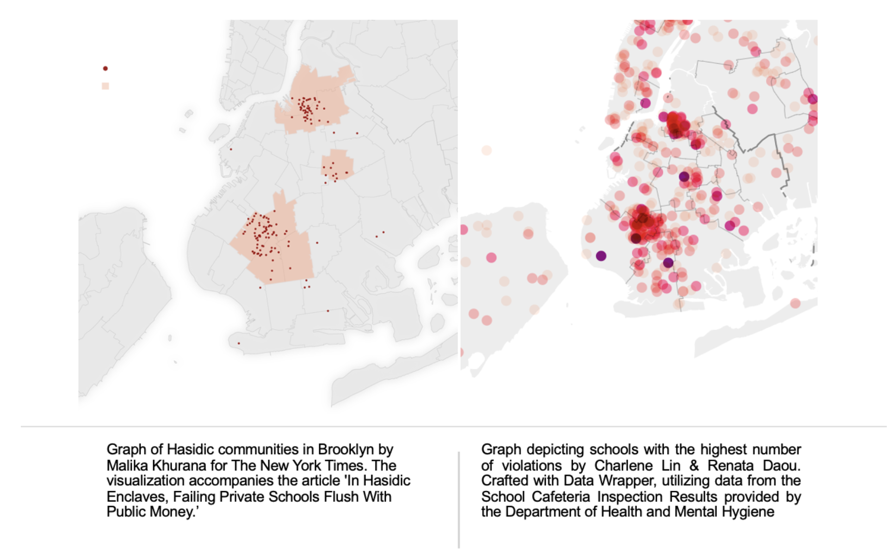

By Charlene Lin & Renata Daou
NEW YORK — It’s a competition you don’t want to win: What kinds of schools in New York City have racked up the most violations for improper food safety measures?
The answer, as revealed by New York City data, is religious private schools.
A staggering 95% of all schools in the city failed to meet all food safety requirements at some point in the past three years, according to the School Cafeteria Inspection Results, provided by the Department of Health and Mental Hygiene.
In a more detailed breakdown, among the 32 schools with six to 10 violations in their recent inspections, 75% of them are private religious schools, and 83% of which are Jewish private schools.
And Based on the DOHMH data, out of over two thousand schools inspected, 11 schools stood out with seven or more violations in a single inspection. The findings highlight that eight of the worst-performing schools are located in Brooklyn, and 10 of them are religious private schools, with eight specifically identified as Jewish schools.
Most schools with a high number of food safety violations are located in two neighborhoods in Brooklyn, Williamsburg, and Borough Park.
Violations vary in categories, labeled as critical, general, administrative, and nutrition violations.
“Critical” violations are food-related issues, including the presence of rodents, insects, or other pests; food not stored under the proper temperatures; and food adulterated, contaminated, or cross-contaminated. “General” violations pertain to general hygiene and equipment deficiency in the establishment, including unclean contact surfaces, and inadequate facilities such as ventilation, lighting, or thermometers.
“Administrative” violations have to do with paperwork, such as permits or educational posters, and “Nutrition” violations refer to establishments lacking nutrition information, etc.
Critical violations and general violations are related to hygiene in the establishment, meaning that schools with these violations pose more threats to the health of their students.
Hygiene-related Violations Prevails in More Than Half of All Schools
Among the 1,385 public schools and 669 private schools recorded in the dataset, 33.4% of the public schools and 59.3% of the private schools have “critical” violations in their food service establishments.
Tovi Tankoano, a student at a public high school, Marble Hill School, in Bronx, said that his peers have complained about the chicken served in the cafeteria.
“Sometimes it's good, Sometimes it kind of makes them feel sick, like their stomach hurts after, but they don't get sick-sick, but they just don't feel like, normal.“
Private schools have more critical and general violations than public schools do. The number of private schools in NYC is about half of the public schools. However, private schools have almost 200 more general violations than public schools, with 1.35 general violations per school on average.
Poly Prep Country Day School is the only non-religious private school with up to nine violations in the recent inspection. The chef at the cafeteria turned down the reporters’ request to take an interview to comment on the matter.
Sophia Lam, a 2018 graduate from Poly Prep, has studied in both public and private school systems.
She points out that the difference between private and public school cafeterias was that the one in her public middle school only heated packaged, frozen food for school lunch, while there was fresh cooking in the private school she went to.
“I think it makes sense that a kitchen used to cook a meal is probably more chaotic and has more room for error than a kitchen that just pulls frozen things that are delivered to them and put it in like this oven thing, “ said Lam.
Both neighborhoods are known for Jewish immigrants dating back to the 19th century. Their community is among the largest in the world and continues to be a residence for numerous Orthodox Jewish families, according to The Times of Israel and City Neighborhoods.
New York's Hasidic community leaders have established numerous private schools focused on instructing children in Jewish law, prayer, and tradition, reported The New York Times. The schools are suspected to be underperforming not only in the food safety inspections but also in breaking the law by not providing their students with an adequate secular education, The New York Times found.
According to the Department of Health and Mental Hygiene (DOHMH), all school cafeterias are required to comply with New York State and New York City Food Safety Regulations, regardless of their funding or religious affiliations.
Upon examining the map showcasing the locations of Hasidic communities, the schools with the highest number of violations are concentrated within the densely populated Hasidic communities in Brooklyn.
The most common violations among the worst-performing schools are:
- Non-food contact surface or equipment made of unacceptable material, not kept clean, or not properly sealed, raised, spaced, or movable to allow accessibility for cleaning on all sides, above and underneath the unit
- Anti-siphonage or back-flow prevention device not provided where required; equipment or floor not properly drained; sewage disposal system in disrepair or not functioning properly. Condensation or liquid waste improperly disposed of
- Establishment is not free of harborage or conditions conducive to rodents, insects or other pests
- Evidence of mice or live mice in establishment's food or non-food areas
It seems like mice, pests, and filthy, humid environments are common in the worst-performing schools.
According to the inspection reports, one of the worst-performing schools, Central United Talmudical Academy (Central UTA), runs 19 locations of school sites from pre-K through 12th grade, while 9 out of them were marked to have existing issues of “non-food contact surface or equipment made of unacceptable material, not kept clean, or not properly sealed, raised, spaced or movable to allow accessibility for cleaning on all sides, above and underneath the unit.”
That being said, almost half of its school sites are experiencing filthy kitchen environments.